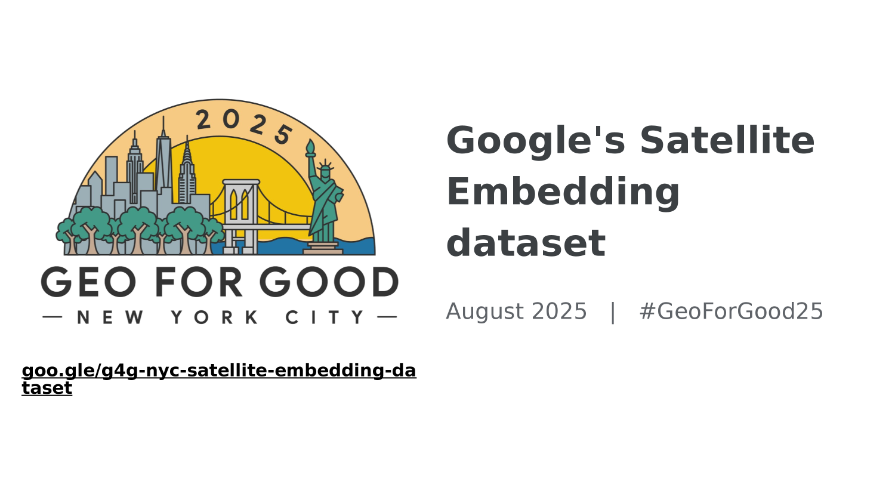
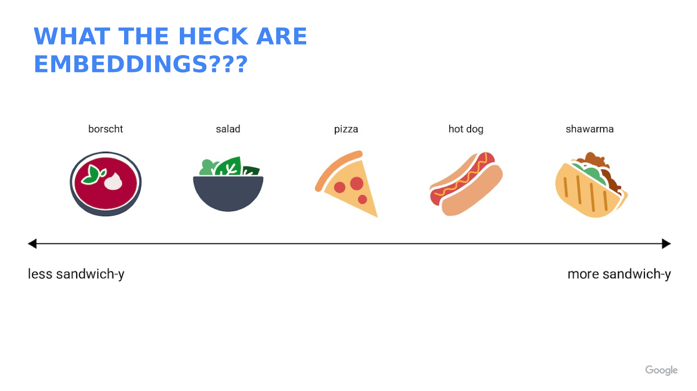
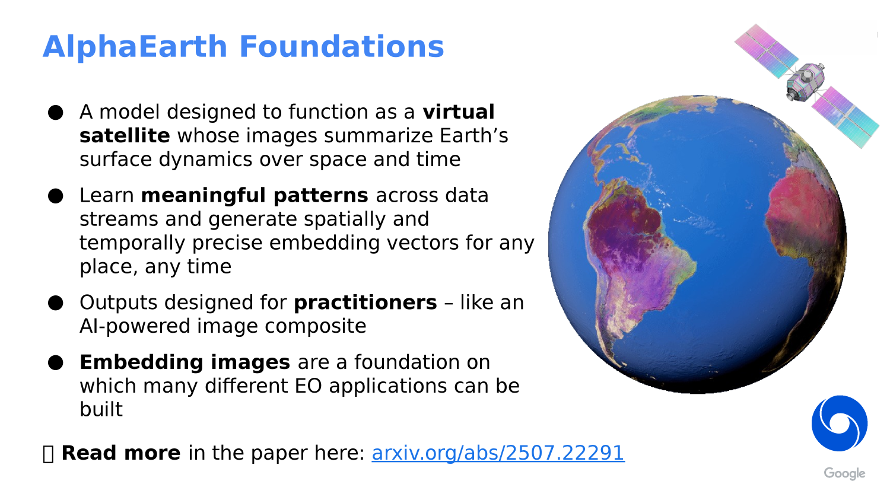

Landcover Classification with AlphaEarth Embeddings in Google Earth Engine
Source note: This lab is adapted from the Google Earth Engine community tutorial Supervised Classification with Satellite Embedding Dataset by spatialthoughts, and it extends the same idea to the course landcover classes used elsewhere in Week 08.
Why this version exists: unlike the older landcover lab, this version uses the annual AlphaEarth embedding collection directly. That means we do not build aSentinel-2composite first. Instead, we train the classifier on the most recent AlphaEarth year available in the collection.


What You Should Understand
By the end of this lab, you should understand how to use an annual embedding image as the input to a supervised classifier in Google Earth Engine.
The main ideas are:
- Load the AlphaEarth annual embedding collection for the newest available year.
- Sample the 64-band embedding vectors at a small set of labeled points.
- Train a simple classifier on those embedding vectors.
- Classify the entire annual embedding mosaic.
- Optionally repeat the workflow for another year if you want to compare landcover change.
Concept Note: An embedding is not a raw image band. It is a learned vector that summarizes many kinds of spatial, spectral, and temporal context at once.
Concept Note: Because AlphaEarth embeddings already contain rich context, you do not need to create cloud-free composites before classification. The annual embedding image is the input.

Getting Ready
This lab reuses the same four landcover classes used in the course’s earlier landcover workflow:
BareWaterVegetationUrban
Each training point or polygon should have a numeric class property:
0= Bare1= Water2= Vegetation3= Urban
Concept Note: Earth Engine classifiers expect numeric class labels. Starting at
0keeps the labels aligned with the class palette we use later.
The code below assumes you already have:
- an area of interest named
aoi - four labeled feature collections named
Bare,Water,Vegetation, andUrban
If you already built training data for the older landcover lab, you can reuse those same labeled points here.
Why AlphaEarth Changes the Workflow
The Satellite Embedding dataset is designed for low-shot learning, meaning it can work well with a relatively small number of representative labeled samples.
That is why the community tutorial uses a simple classifier such as k-Nearest Neighbors (kNN). The classifier learns directly from embedding vectors rather than from a hand-built spectral composite.
Concept Note: This is a useful teaching contrast with the older image-based lab. The older workflow started with an image composite and then sampled pixels. The AlphaEarth workflow starts with the annual embedding mosaic and samples that instead.
Workflow Overview
We will build the workflow in these steps:
- Choose the most recent AlphaEarth year.
- Load the annual embedding mosaic.
- Merge the labeled training points.
- Sample embedding vectors at the training locations.
- Train a kNN classifier.
- Classify the annual embedding mosaic.
- Evaluate the result and optionally export it.
- Optionally repeat the same workflow for a second year to explore change.
Step 1: Set Up the Script
Start by selecting the current year and your study area.
// Landcover Classification with AlphaEarth Embeddings in Google Earth Engine
// This version trains directly on the annual AlphaEarth embedding image.
// STEP 1: Choose the newest annual AlphaEarth year available in the collection.
// At the time of writing, 2024 is the latest year used in this course material.
var year = 2024;
// STEP 2: Build date boundaries for the selected year.
var startDate = ee.Date.fromYMD(year, 1, 1);
var endDate = startDate.advance(1, 'year');
// STEP 3: Load or import your study area.
// The course script can use the same `aoi` geometry object you already drew
// or imported for the landcover lab.
// STEP 4: Center the map on the study area so you can inspect results later.
Map.centerObject(aoi, 10);
Map.addLayer(aoi, {color: 'red'}, 'AOI');
Step 2: Load the Annual AlphaEarth Embedding Mosaic
Now load the annual embedding collection and filter it to your study area and year.
// STEP 5: Load the AlphaEarth annual embedding collection.
var embeddings = ee.ImageCollection('GOOGLE/SATELLITE_EMBEDDING/V1/ANNUAL');
// STEP 6: Filter to the selected year and study area.
var embeddingsFiltered = embeddings
.filter(ee.Filter.date(startDate, endDate))
.filter(ee.Filter.bounds(aoi));
// STEP 7: Mosaic the filtered tiles into one annual embedding image.
var embeddingsImage = embeddingsFiltered.mosaic();
// STEP 8: Save the band names so we can reuse them later.
var bandNames = embeddingsImage.bandNames();
// STEP 9: Print basic information so you can verify the collection structure.
print('AlphaEarth embedding band names', bandNames);
print('Number of embedding bands', bandNames.length());
Concept Note: The annual AlphaEarth collection is already analysis-ready. That is the key difference from the older workflow, where we first had to make a cloud-masked image composite.
Step 3: Merge the Training Points
Earth Engine classifiers train on one feature collection, so we combine the labeled samples into a single training layer.
// STEP 10: Merge the class-specific sample layers into one training collection.
var trainingFeatures = Bare.merge(Water).merge(Vegetation).merge(Urban);
// STEP 11: Sample the embedding image at the training locations.
// The result is a table where each row contains the 64 embedding values
// plus the class label.
var samples = embeddingsImage.sampleRegions({
collection: trainingFeatures,
properties: ['class'],
scale: 10,
tileScale: 4
});
// STEP 12: Print one sample so you can inspect the structure.
print('Training samples', samples.first());
Concept Note: This step is the bridge between the embedding image and the classifier. It turns raster values into a table of labeled examples.
Step 4: Split the Data for Training and Validation
It is still good practice to hold out a portion of the samples for validation.
// STEP 13: Add a random column so we can split the sample set.
var samplesWithRandom = samples.randomColumn('random');
// STEP 14: Split the samples into training and validation subsets.
var trainSet = samplesWithRandom.filter(ee.Filter.lt('random', 0.7));
var validationSet = samplesWithRandom.filter(ee.Filter.gte('random', 0.7));
print('Training set size', trainSet.size());
print('Validation set size', validationSet.size());
Concept Note: The community tutorial emphasizes that only a small number of good samples is needed. That is why this lab keeps the training/validation split simple.
Step 5: Train a kNN Classifier
The community tutorial uses k-Nearest Neighbors, which is a good match for low-shot learning on embeddings.
// STEP 15: Train a kNN classifier on the embedding vectors.
var classifier = ee.Classifier.smileKNN().train({
features: trainSet,
classProperty: 'class',
inputProperties: bandNames
});
// STEP 16: Evaluate the classifier on the training set.
var trainConfusion = trainSet.classify(classifier).errorMatrix('class', 'classification');
print('Training confusion matrix', trainConfusion);
print('Training overall accuracy', trainConfusion.accuracy());
// STEP 17: Evaluate the classifier on the validation set.
var validationConfusion = validationSet.classify(classifier).errorMatrix('class', 'classification');
print('Validation confusion matrix', validationConfusion);
print('Validation overall accuracy', validationConfusion.accuracy());
Concept Note: kNN works by comparing each pixel to nearby labeled examples in embedding space. That is why embeddings are so useful: similar places tend to cluster together in the vector space.
Step 6: Classify the Annual Embedding Mosaic
Now classify every pixel in the annual AlphaEarth mosaic.
// STEP 18: Apply the classifier to the annual embedding image.
var classified = embeddingsImage.classify(classifier);
// STEP 19: Define a palette for the four landcover classes.
var classVis = {
min: 0,
max: 3,
palette: ['ffd629', '008fff', '118b05', 'ff0c06']
};
// STEP 20: Add the classified result to the map.
Map.addLayer(classified.clip(aoi), classVis, 'AlphaEarth landcover classification');
Concept Note: The classified output is a landcover map built from embeddings, not from a raw image composite. That is the main conceptual shift in this version of the lab.
Step 7: Extract One Class as a Binary Mask
If you want to focus on one class, you can turn the classification into a mask.
// STEP 21: Extract the vegetation class as a binary mask.
var vegetationMask = classified.eq(2).selfMask();
// STEP 22: Display only the vegetation pixels.
Map.addLayer(vegetationMask.clip(aoi), {palette: ['00ff00']}, 'Vegetation mask', false);
Concept Note: The same trick works for any class. Change the class number to isolate bare ground, water, vegetation, or urban areas.
Step 8: Optional Export
For a large area, you may want to export the classification as an asset.
// STEP 23: Optional export to an Earth Engine asset.
// Replace the path with your own asset folder.
Export.image.toAsset({
image: classified.clip(aoi),
description: 'AlphaEarth_Landcover_Classification_2024',
assetId: 'projects/your-project/assets/AlphaEarth_Landcover_Classification_2024',
region: aoi,
scale: 10,
pyramidingPolicy: 'MODE',
maxPixels: 1e10
});
Concept Note: Use
MODEfor a classified image because the output contains discrete class values instead of continuous measurements.
Step 9: Optional Change Detection Extension
This 02b version is focused on AlphaEarth-based classification. If you want to extend it into change detection, repeat the same workflow for a second year and compare the resulting class maps.
For example:
- classify 2024 with the code above
- change
yearto 2023 - rerun the workflow
- compare the two classified maps with
neq()
// OPTIONAL EXTENSION ONLY:
// If a second year is available in the annual collection, repeat the
// workflow for that year and compare the results.
var previousYear = 2023;
var previousStart = ee.Date.fromYMD(previousYear, 1, 1);
var previousEnd = previousStart.advance(1, 'year');
var previousEmbeddings = embeddings
.filter(ee.Filter.date(previousStart, previousEnd))
.filter(ee.Filter.bounds(aoi))
.mosaic();
var previousClassified = previousEmbeddings.classify(classifier);
var changeMask = previousClassified.neq(classified);
Map.addLayer(changeMask.selfMask().clip(aoi), {palette: ['ffffff']}, 'Change mask', false);
Concept Note: The optional change detection step only makes sense if the annual AlphaEarth dataset has multiple years available for your study area.
What This Teaches
The main takeaway is that the AlphaEarth annual embedding collection gives you a compact, analysis-ready representation of the landscape.
Instead of building a spectral composite first, you can:
- load the annual embedding mosaic
- sample labeled examples
- train a simple classifier
- classify the whole region
That makes the workflow shorter, more flexible, and more consistent with modern embedding-based analysis.
If you want to review the community tutorial that inspired this lab, see: